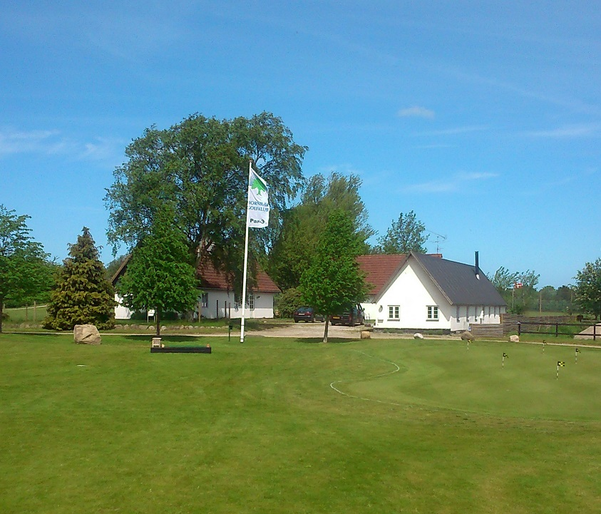
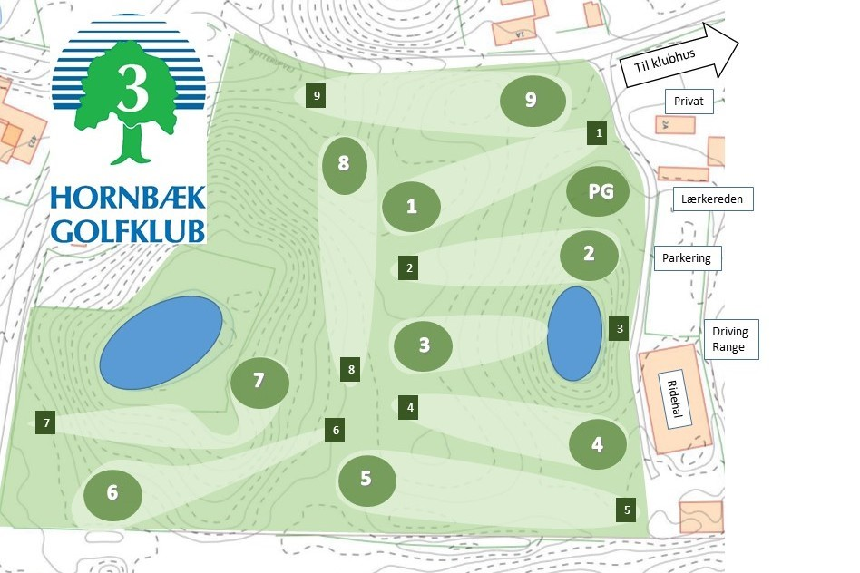
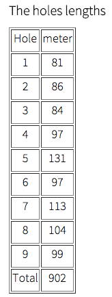

<div class="pages">
  <div data-page="laerkeager-banen" class="page navbar-fixed toolbar-fixed" >
    <div class="navbar">
      <div class="navbar-inner">
        <div class="left">
          <a href="#" class="link back icon-only"><i class="icon icon-back"></i></a>
          <!-- <a href="#" class="back link icon-only"><i class="icon icon-back"></i></a> -->
        </div>
        <div class="center">Lark Ager course</div>
        <!-- <div class="right"></div> -->
        <div class="right">
        </div>
      </div>
    </div>
    <div class="page-content" style="padding-top:45px;">
       <div class="content-block">
          <p>Hornbæk Golf Club's new Pay and Play course called Lark Ager course !
            <br /><br />
            It is a 9-hole par-3 course which is just 81 meters from Tee to Green at the shortest hole and the 131 meters at its longest.
            <br /><br /> 
            The course was designed and established by the club Greenkeeper-staff over the past 2½ years.</p>
          <p>little help
          <br /><br /> 
          <br /><br />
          <br /><br />
          
          Note that there are drop zones on the 3rd and the 7th hole. If the ball ends up in the lakes or bogs must, with 1 penalty stroke, dropped on the mats. Putte Putting Green (PG) is out of bounds and the ball lands there, turn a new battle. There are also out of bounds along the boundaries of the 5th and 6th hole, it is marked with white stakes or white lines.
          <br /><br />
          Enjoy the ride
          Hornbæk Golf Club</p>
        </div>
    </div>
    </div>
    </div>
  </div>
</div>
